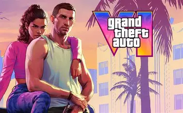
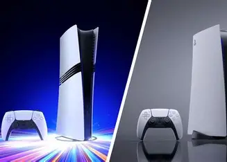
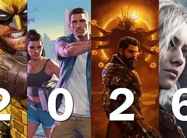

El GTA VI es el juego más esperado del año, con rumores de una jugabilidad mejorada y gráficos impresionantes, pero lo que más ha llamado la atención son las filtraciones que han surgido en los últimos meses. Se dice que las filtraciones incluyen imágenes y videos del juego no fueron lanzados por rockstar games, sino por un grupo de hackers que lograron acceder a los servidores de la compañía.

La PlayStation 5 es la consola de videojuegos más reciente de Sony, lanzada en noviembre de 2020. Con un diseño futurista y un rendimiento impresionante, la PS5 ha sido muy popular entre los jugadores. La consola cuenta con un procesador AMD Ryzen de tercera generación y una tarjeta gráfica AMD RDNA 2, lo que permite juegos con gráficos de alta calidad y tiempos de carga rápidos.

Los estrenos de videojuegos son eventos muy esperados por los jugadores, ya que ofrecen la oportunidad de experimentar nuevas historias, personajes y mecánicas de juego. Los estrenos pueden ser tanto de juegos independientes como de grandes franquicias, y suelen generar una gran expectación en la comunidad gamer.